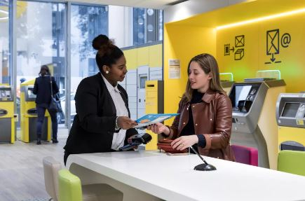
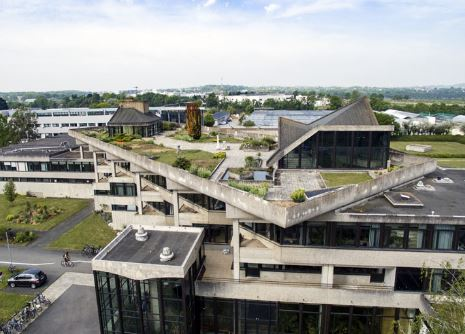
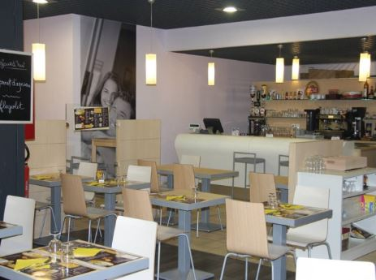
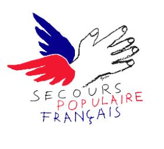
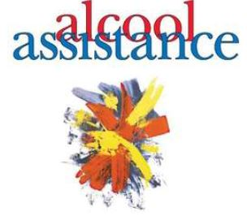
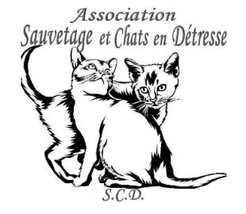

Qui suis je ?
Étudiante de 24 ans en deuxième année de BTS SAM au lycée Chevrollier à Angers. Après avoir obtenu un Bac ES en 2016 et avoir étudié 2 ans en DEES (Diplôme d’Etat d’Educateur Spécialisé).
Mes objectifs
A court terme : entrée en licence professionnelle “Métiers des administrations et des collectivités territoriales” pour développer mes compétences et m’orienter dans un domaine plus précis.
A long terme : passer les concours de rédacteur de la fonction publique pour intégrer un poste dans lequel m’épanouir
EXPERIENCE PROFESSIONNELLE
Nov 2021 – Déc 2021
Stage relations internationales - Ecole du Génie à Angers (49)
Participation à l’organisation d’évènements
Suivi des dossiers des militaires partant en mission à l’étranger
Accueil de délégation
Nov - Dec 2019 / Juil - Août 2020 / Juil - Août 2021 / Oct 2021
Chargée de clientèle - La Poste Monplaisir et Ralliement à Angers (49)
Accueil des clients
Réception, vérification et enregistrement des colis
Vente des produits et services
Réalisation d’opérations bancaires

Mai 2021 – Juin 2021
Stage relations internationales - Agrocampus Ouest à Angers (49)
Participation au projet de création d’une carte verte des destinations
Réalisation d’une veille informationnelle
Mise à jour du site Internet Français et Anglais

Juil 2017 – Août 2019
Serveuse & caissière - Brasserie Super U à Ancenis (44)
Accueil des clients
Préparation des plats et plonge / Mise en place de la salle
Gestion de la partie PMU / française des jeux

BENEVOLAT

Secours populaire :
Participation aux collectes
Accueil des bénéficiaires
Tri des dons
Préparation des colis alimentaires
Rangement des dons
Participation au père noël vert

Alcool Assistance :
Mise en place des réunions des bénéficiaires
Encadrer une intervention de sensibilisation
Intervention en milieu hospitalier
Participation à un colloque

Réalisation des soins pour les chats
Création de fiche d’adoption pour les chats
Publier les diverses annonces sur le site de l’association
borderborderborderborderborderborderborderborderborderborderborderborderborderborderborderborderborderborderborderborderborderborderborderborderborderborderborderborderborderborderborderborderborderborderborderborderborderborderborderborderborderborderbo
FORMATION
Le BTS Support à l'action managériale permet :
Acquérir des compétences relationnelles, organisationnelles et administratives
Remplir des activités de soutien et des activités déléguées plus ou moins spécialisées selon le service
Parler deux ou trois langues
Organiser des événements, des déplacements, de gérer l'information et de prendre en charge un certain nombre de dossiers, administratifs ou directement liés à l'activité générale de l'organisation
Travaille dans une entreprise, une association, une administration ou tout autre type d'organisation